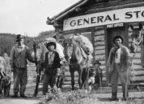
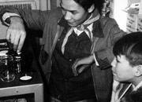
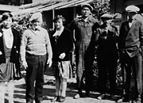
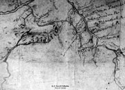
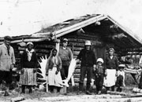
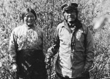

"And they had their own justice system and their clan system, and that's what they went by. They governed themselves."
Pearl Keenan
1998.
In early times First Nations people in the Yukon lived in social groups made up of several households. People who lived in the same group spoke the same language and were usually also closely related. They didn't stay in one home all year, but travelled to many different places to hunt, fish or pick berries.
Through the years the interior peoples have had close ties to the Tlingit peoples of the Pacific coast and to people in central Alaska and the Mackenzie Valley. First Nations people grouped themselves according to matrilineages, tracing their ancestry through their female kin. Their society was divided into two halves, or moieties. Everyone in the same moiety belonged to their "mother's people"; those in the opposite moiety belong to their "father's people". People married someone from the opposite moiety.
In many parts of the territory, these two moieties were called the Wolf Clan and the Crow Clan. Clans trace their history back to earliest times through stories, songs and symbolic crests. Clans were responsible for specific sites where people hunted and fished, and for the care and use of these resources. Clan leaders – who could be male or female – decided when and where to travel each season. Sharing resources and helping each other were essential values that are still part of life today.
Continue to NewcomersKwäday Kwädän: Long Ago People
(Above) A group of Kaska at Ross River, c.1922.
YA, Tidd collection #7633

Group of men in front of general store,
Carmacks, c. 1947.
YA, Back collection, 90/19 #76
Allen Benjamin and Howard Linklater work together on a school project, c. 1970.
YA, Chief Zzeh Gittlit collection #9363
'Princess Pat' Lingrin (daughter of Han Chief Isaac), Apple Jimmy Oglo, Irene Whitehouse, Dave Roberts, Riley Johnny and Stanley Roberts in Dawson, n.d.
YA, Kates collection #5770
Map of the Upper Yukon, Tanana and Kuskokwim rivers, drawn by Paul Kandik, "Yukon Indian", c. 1890.
Bancroft Library, Berkeley
Mr. and Mrs. Allen, Jimmie Enoch, Annie Enoch, Billy Blair Jr. and William Blair Sr. with three others at Snag, 1930s.
YA, Billy Blair collection, 82/384 #3
Aishihik Chief Isaac with wife Rachel, probably taken at Carmacks, c.1914.
YA, Back collection, 90/19 #30